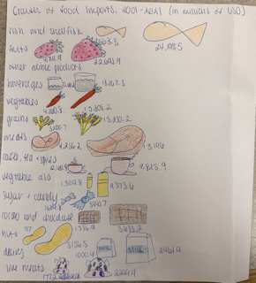

Subhed here
I wanted to display the difference between the amount of imports from 2001 and 2021 to show how much more the United States imports in recent years. To show the stark differnce I chose a horizontal bar chart where the years are directly compared by being next to each other, I feel that this was the simplest way to show the difference. I chose blue and yellow becuase they are contrasting colors and you can clearly see the divide between years.
For my dataviz chart, I wanted to implement a lot of color which is why I chose to draw out the categories. Using size to show the difference felt like the most logical way to display the increase in the value of imports between the two years, so I chose to make the pictures from 2001 smaller than those from 2021. Since this was done on paper I had to write the values next to the images, but if it was done digitally I would have had the values appear when you hover over the image like in my Datawrapper chart.
If I were to edit these charts and/or do them again I would definitley adjust the spacing of my dataviz chart. I didn't really process how many categories there were when I first laid out the chart and did not give myself nearly enough room to draw the pictures. I would adjust the scale of the pictures to each other along with chaging the spacing so it looks less squished.
